IsoCam is the software for the execution of profiles with the disk; it allows to draw or import profiles, decide the profile and apply different working methods.
The management of working programming is divided in different phases that will be described in the following paragraphs.
Upon the Isocam program opening, if no processing previously created is present, the operator will be able to create a new one, from the first step of processing.
In the case instead in which there is a processing previously created, this will be automatically loaded and the operator will have access directly to the last step of the processing:
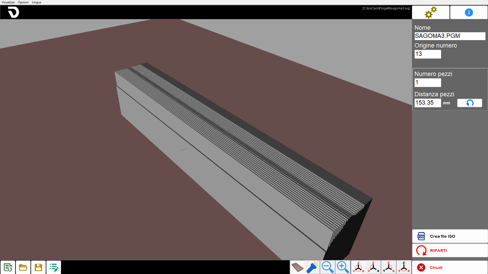
Elements in common between the various steps
The user interface is composed by different areas.
Menu: rapid utility.
Top bar: functions specific to the active page.
Central part: contains the drawing or the active area based on the page.
Side bar: window containing the parameters to modify.
Lower bar: buttons generally valid in different areas of the software.
The following elements will remain always visible, regardless from the current phase of the process.
Menù
The menu bar is located on top, above every other element of this interface.
Visible | Some settings regarding the visibility of the pieces present in the work area are made available to the operator. |
Options | It is possible to modify settings relative to colors. |
Language | ISOCAM is currently available in the following languages:
|
Right side bar
 | Settings |
 | Info |
 | Step Management |
Close |
Settings
This panel allows to switch to the Advanced mode of IsoCam, to return to the base version, and to modify the values of Grid Step in X and Y.

Lower bar
New working | |
Open files | |
Save working | |
Modify working |
Drawing of the section (step 1 of 4)
The first phase of programming consists in the drawing of the section to be worked. The window proposes the characteristics commands of a CAD software: draw line, draw arch, snap, move, etc…
The basis of the software is the creation of the section as a quick sketch that will then be modified, entity by entity, with the appropriate commands. There remains always the possibility to import .dxf drawings generated by external CAD.

Top bar

 | Command drawing Line |
 | Command arc drawing |
 | Move the selected lines |
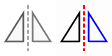 | Mirror Figure |
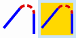 | Fillet |
 | Inversion of active selection |
Delete selected traits |
Right side bar
Line property
Selecting a line in the working area, the right-side column is updated to show the features of the selected entity, which can be modified by the user.
Length | Indicates the linear distance between the two ends of the selected line, calculated based on the coordinates in the working space. |
Angle | Indicates the orientation of the line with respect to the horizontal axis of the reference system. |
Δx | Indicates the variation of the X coordinate between the initial and final point of a line or entity, that is the horizontal distance traveled with respect to the X axis of the reference system. |
Δy | Indicate the variation of the Y coordinate between the initial and final point of a line or entity, that is, the vertical distance traveled with respect to the Y axis of the reference system. |
Extend/Shorten selected line | |
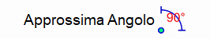 | Approximate Angle |
Scale connected traces | Allows to apply a proportional scale to all entities directly or indirectly connected to the selected line. |
Arc property
By selecting an arc in the work area, the right-hand side column is updated to show the characteristics of the selected entity, which can be modified by the user.
The arc can be defined in different ways: by points, as center, radius and arc, etc…
The various characteristics are showed in the window that appears on the right.
The variation of some characteristics can be satisfied in different ways, for example changing the radius or the initial/final point; to discriminate the way of modification there is the 'Fixed center' flag.
Radius | Indicates the constant distance between the center of a circular curve or arc and any point along its circumference. |
Initial/Final angle | Angle of the initial or final point with respect to the center. |
Tangent Previous / Next | Modify the initial or final angle so that the arc results tangent to the previous or subsequent entity. |
Fixed Center | Allows to decide the consequences of a change (radius or angle). |
Move / Move selection
Upon enabling the 'move' command, the window with the handling parameters appears. handling can be done directly by clicking on the drawing area (even with the snap enabled) or by setting the parameters.
The confirmation of the movement must be given with the 'OK' button.
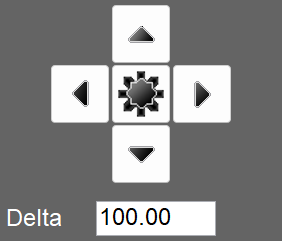 | Position selector |
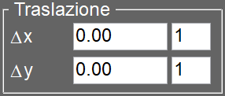 | Translation |
Move copy | If enabled, the function creates a copy of the selected entity and applies the displacement only to this copy, leaving the original entity unchanged. |
Mirror
After enabling the command it is necessary to set the center of symmetry by clicking on the work area or setting the quotes, select the direction of the mirror and press the 'OK' button to confirm.
Center of symmetry | Allows to change the coordinates of the symmetry center used for the horizontal or vertical flipping of the selected entity. |
Coordinates to invert | Indicate if to execute the overturning in horizontal, in vertical or in both directions. |
Mirror copy | If activated, the mirroring operation is performed by creating a mirrored copy of the selected entity, keeping the original intact. |
Fillet
A first message, displayed in the right column, allows the operator to set the radius of the corner and confirm the selection.
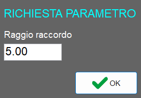
A second message informs the operator that is now possible insert fillets between two lines, operation available until the deactivation of the functionality.
Below the example of applying radii on two adjacent lines and a line adjacent to an arc:
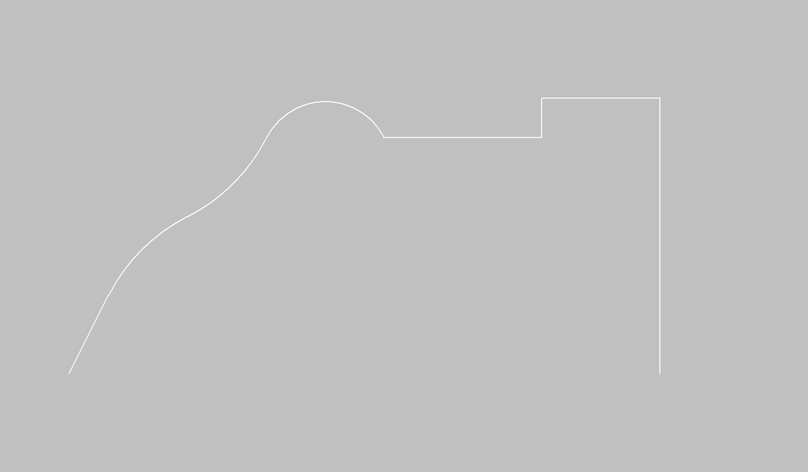
After the fittings application:
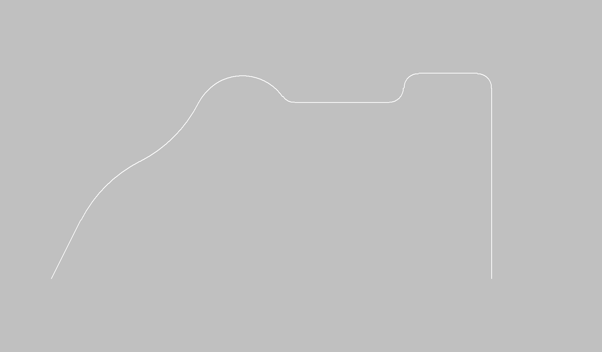
Lower bar
Import File DXF | |
Export dxf file | |
 | Cancel modify |
 | Snap start/end |
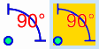 | Command Orto |
 | Command Connected Lines |
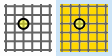 | Drawing grid |
Undo Zoom | |
Select selection for Zoom | |
 | Restore Zoom |
Selection profile (step 2 of 4)
The previously drawn section must be applied to a suitable profile.
The profile can be linear or arc, in the X/Y plane or even vertical; based on the selection some working modes will be enabled or disabled. So, for example, an arc profile in the XY plane can be worked only with vertical disk and viceversa for an arc profile in the XZ or YZ plane.
The profile type is chosen with the buttons on the left, at the top center are showed the parameters to describe geometrically the profile and in the central lower part is showed the preview of the result.

Center part
Linear profile | You set the direction and the length. |
Arc profile | You define: direction, work area, concavity and the geometric characteristics. |
Profile circle | It will worked only externally with horizontal disk. |
Linear profile parameters

Profile Execution | There are two modes: 'Along X' and 'Along Y'. |
Line length (L) | Horizontal length of the base of the inclined segment, measured between the starting point and the horizontally projected endpoint. |
Delta Z final point (H) | Height of the inclined tract, that is the difference of quota between the beginning and the end of the segment. |
Arc profile parameters

Profile execution | Choice between 'Long X' or 'Long Y'. |
Processing orientation | Choice between 'Plane XZ' or 'Plane XY'. |
Type of processing | Choice between 'Concave' or 'Convex'. |
Length (L) | Horizontal distance between the two ends of the arc, that is the chord connecting the beginning and the end of the arc. |
Starting radius (R) | Distance from the center of the arc to the point of the arc itself. Determines the overall curvature of the arc. |
Development in vertical (H) | Height maximum of the arc with respect to the chord L; represents the vertical distance between the highest point of the arc and the chord. |
Angle width (A) | Angle at the center subtended by the arc, expressed in degrees. |
NOTEThe modification of one of the following values: 'Length', 'Starting Radius', 'Vertical Development' or 'Angle Width', implies the automatic recalculation of the remaining parameters.
Profile parameters Circle
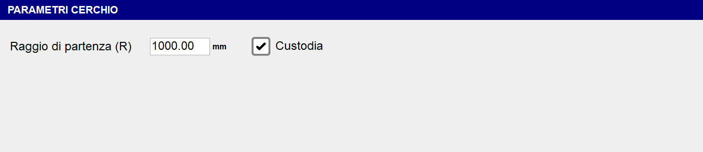
Starting radius (R) | Determine the radius from the starting point. |
Custodia | This flag indicates if during the working phase the C axis rotates (custody active) or remains still with C=0_ (custody not present). |
Bottom bar
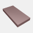 | Visible table |
Additional Lights | |
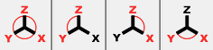 | Pieces views manage |
Working parameters (step 3 of 4)
The page is divided into boxes with different types of data to set for processing
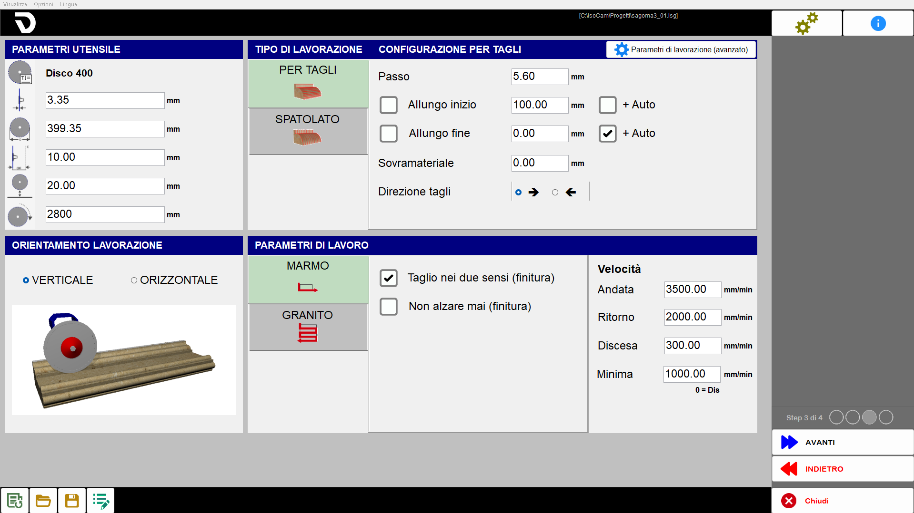
Tool parameters
The operator can define the parameters of the tool:

If it is a new project the data is loaded automatically based on the tool physically installed; if instead it is a working previously saved, the tool data will be those already saved in the previous program.
 | Tool name |
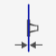 | Thickness |
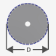 | Diameter |
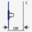 | CRF (Center Rotation Flange) |
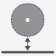 | Safety Quote |
 | RPM (Revolutions Per Minute) |
Working orientation

Linear profile
For linear profiles there is possibility to choose if execute the working with disk in vertical or with disk in horizontal (from front or from left).
Vertical Orientation | Horizontal |
 |  |
Arc Profile
For curvilinear profiles the orientation is bounded by the profile type:
Working type | Vertical Orientation | Horizontal Orientation |
Concava | 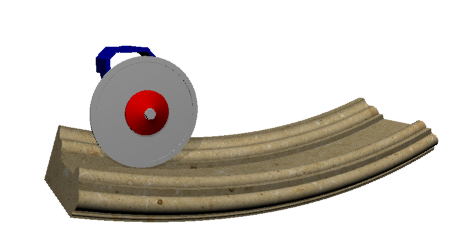 | 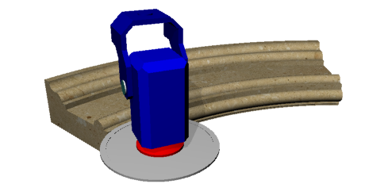 |
Convex | 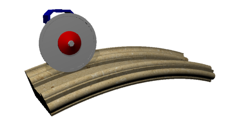 |  |
Type of working

The processing can be carried out in two modes:
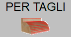 | Rows mode for cuts |
 | Spaclo mode |
Configuration For cuts
Parallel cuts will be executed among themselves that follow the selected profile at a distance between the cuts taken from parameter.
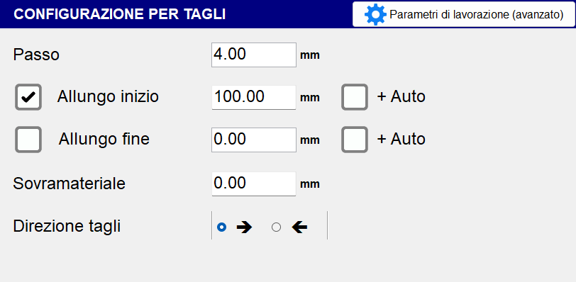
Step | Indicate the distance between the position of a cut and the adjacent one. If higher than the disk thickness, material will remain between the passes. |
Extension start / end | Allows to extend a cut in the initial / final part of the set value. |
More Auto | Enabling the flag involves an automatic increase of the extension value, based on a value established by the system. |
Offset work | Thickness of the material to leave above the desired final section. |
Cut direction | The direction of the cut can happen from right to left or from left to right, depending on the selected configuration. |
Spatula Configuration
The movement will be transverse to the direction of the profile, it is used for a surface finish of the piece.

Spreading step | Indicates the distance a transversal movement and the next along the direction of the profile. |
|---|
Speed and cutting mode
Based on the previous selections, different menus appear for the selection of the parameters necessary to define the working.

If the selected working type is the Configuration for Cuts, two types of working parameters will be available.
 | Marble Mode |
 | Granite mode |
Marble mode
General parameters:
Cuts in two senses (finishing) | This flag allows setting a return speed different from the go speed. |
Do not raise ever (finish) |
Speed Parameters:
Gone | The execution speed of the way of the step. |
Return | The execution speed of the return step. |
Penetration | The execution speed of penetration of the pass. |
Minimum | Setting a value different from zero the cutting speed will depend on the depth of the cut itself, then you will have a movement at a going speed for cuts at zero depth and at minimum speed when the cut is at maximum depth for the selected section. |
Granite mode
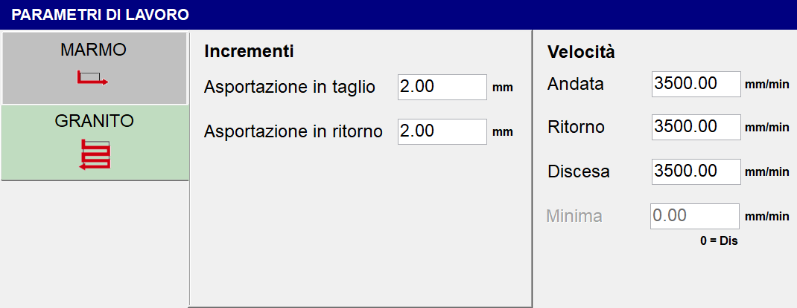
General parameters:
Removal in cut | Quantity of material that is removed in the going pass. |
Removal in return | Quantity of material that is removed in the return pass. |
If the selected working type is the Spatula Configuration, one working parameter will be avaiable.
Speed - Processing | Set the speed at which the spatulated working type will be performed. |
|---|
Machining parameters (advanced)
Processing parameters (advanced) |
In this screen it is possible to verify and modify different parameters, many of which have been set in steps 2 and 3.
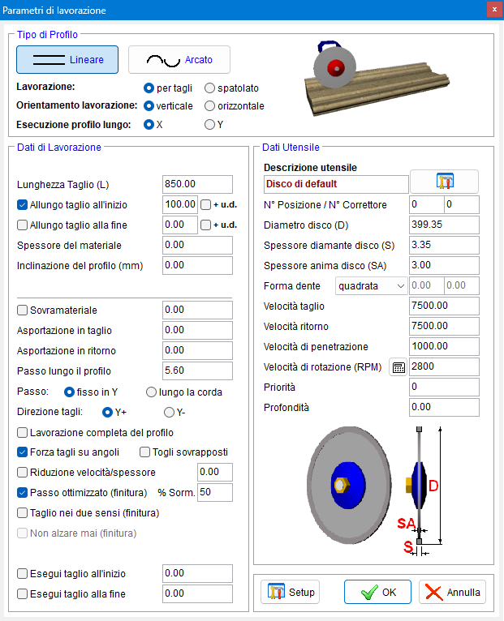
The first operation consists in the selection of the type of profile to use.
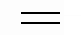 | Linear |
 | Arcated |
And subsequently the following parameters:
Working | It can be for cuts or spatulated. |
Processing orientation | The working can be executed in verticalor in horizontal. |
Execution profile along | Along X or Y. |
Processing data
For the Linear profile is possible to set the following parameters:
Thickness of the material | Defines the measurement of the material (in mm) thickness. |
Inclination of the profile (mm) | It allows to define the profile inclination indicating the difference in height between the final point and the initial point. |
For the Arched profile are available the parameters adjustable in the previous steps.
Both profiles also have the following working data in common:
Step | Fixed in Y: maintains the fixed distance between cuts regardless of the section below |
Cut direction | Choice between 'Y_' or 'Y-'. |
Complete profile processing | Allows to choose whether or not to complete the profile working. |
Force cuts on corners | Add cuts at slope variation points. |
Remove overlaps | If this flag is enabled and the 'Step' value is greater than the 'Thickness', the overlapping cuts will be removed. |
Optimized step (dyeing) % Over. | If the 'Step' value is lower than the 'Thickness' value, the step will be optimized on the horizontal lines. |
Perform cut at start | Allows to choose whether to perform or not a cut at the beginning of the profile. Through the box beside it is possible to set the depth of this cut. |
Execute cut at the end | Allows to choose if execute or not a cut at the end of the profile. Through the box next is possible to set the depth of this cut. |
Tool Data
Here are reported some data previously set and other parameters specific for the tool.

Tool description | A quick description of the tool |
Tool warehouse | |
N_ Position | Indicate the number of the position inside the tool magazine of the selected tool. |
N_ Corrector | Indicate the number that identifies the name of the selected tool. |
Core thickness disk (CT) | Thickness of the disk’s central support body. |
Shape tooth | The operator will be able to choose one between three forms of the tooth:
|
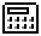 | Choice material
|
Priority | It is possible to establish a priority value (strictly positive). |
Depth | Indicates the depth of the tool cut. |
Processing (step 4 of 4)
Based on the previous selections, a preview of the calculated cuts is shown. The page is divided into different areas with the commands to manage the changes.
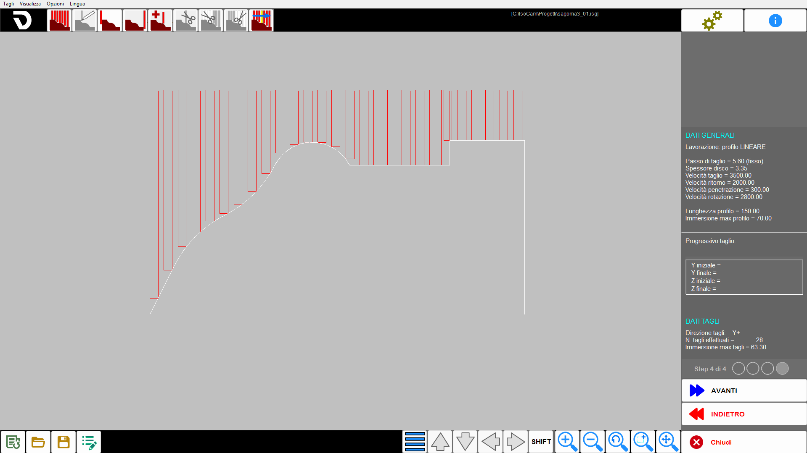
Once the cuts have been checked or the desired changes made, press the 'NEXT' button to open the page to generate the cutting program.
Menu
In the fourth step a further entry is made visible in the upper menu:
Cuts | This menu offers some quick settings for the cuts generated. |
|---|
Top bar
Generation cuts | |
 | Modify the position of the cut |
 | Add a cut of head for separation of pieces |
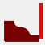 | Add a tail cut for piece separation. |
 | Add a cut in the position of the mouse (Ins) |
Delete the selected cut | |
 | Delete the cuts prior the selected cut |
Delete the cuts after the selected cut | |
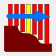 | Simulation cuts |
Center part
Right lateral bar
In the fourth step this bar contains the following information:
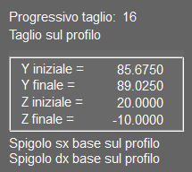 | Progressive cut |
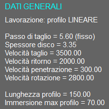 | General Information |
 | Cut Data |
Lower bar
Options on cut | |
 | Move/extend cuts |
 | Shift |
Create program
Upon completion of the preparation in the fourth step, it is possible to access the final phase, which includes viewing the obtained result and the generation of the ISO file.
In the central part is shown the 3D of the generated working considering the working method. By clicking in the area it is possible to rotate the view and manage the zoom.
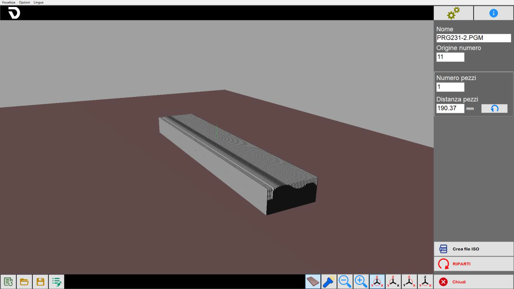
Basic procedure
Step 1
To begin, press the button 'New working'. Make sure the 'Connected edges' function is active, then activate the 'line' command. Proceed with a series of clicks on the working area to draw the desired section. Once the drawing is complete, click the 'line' command again to deactivate it. At this point, select each entity individually to verify and, if necessary, modify its parameters.
Step 2
In this step the operator can set some basic generalities linked to the searched working type.
Step 3
At this point it is possible to set parameters relative to the tool, to the working type, orientation and parameters of the working selected.
In the panel 'Working parameters (advanced)' moreover it is possible to have an overview of all parameters set up until this moment.
Step 4
A list of cuts is automatically generated for the current working. It is possible to insert, modify and remove cuts in relation to operating needs.
ISO Generation
The final step of the working allows the operator to create an ISO file from the obtained working or to restart the procedure.